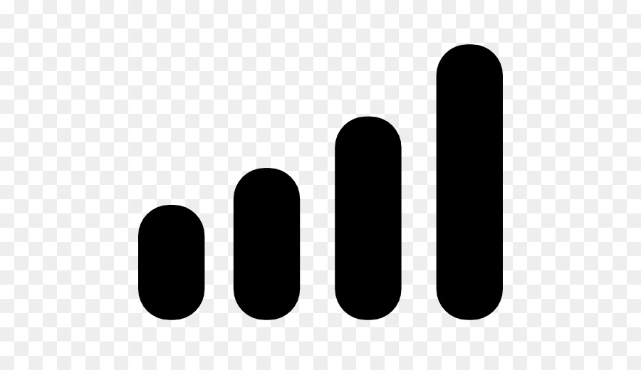

12:00



WhatsApp
This tool aims to inform users about the "political" implications of their favorite apps. By understanding the power dynamics and social impact embedded within these technologies, users can make more inclusive and informed decisions about their digital interactions. Empowering and supporting marginalized groups through conscientious use of these platforms can help foster a more inclusive and equitable digital environment, which can have a resounding impact in a non-digital one.